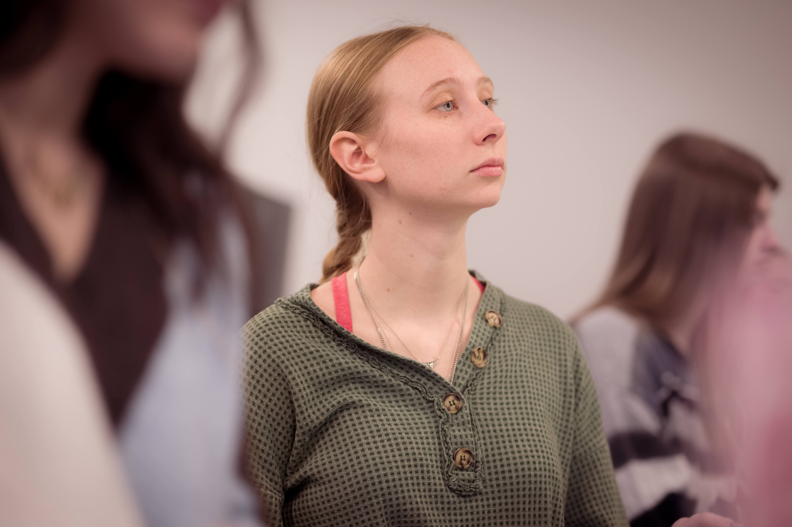
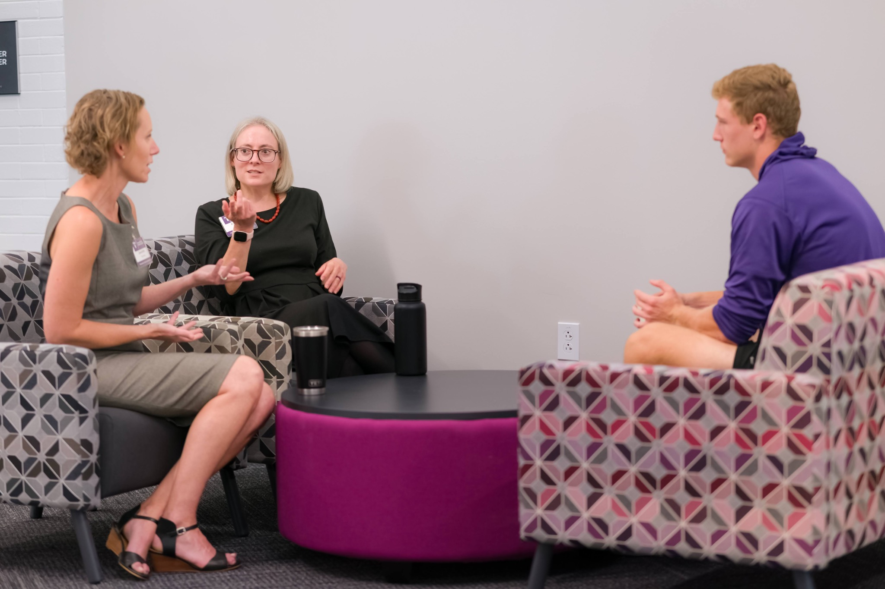

Software Development
Move from programming fundamentals to design, testing, software engineering, and application development.

Learn to design software, understand computing systems, and turn ideas into working solutions—with the support of faculty mentors and a close-knit student community.
Whether you want to build an app, work with data, develop secure systems, or prepare for graduate school, Truman gives you the fundamentals and room to explore.
Move from programming fundamentals to design, testing, software engineering, and application development.
Explore computational approaches to intelligent systems and applications that rely on data.
Understand operating systems, systems programming, architecture, and how software interacts with hardware.
Learn to organize, query, and manage information that powers modern software and services.
Explore interactive applications and human-centered design for people using technology.
Study computing responsibilities, secure practices, and the real-world impact of technology.

Courses are just one part of a computer science education. Students also pursue internships, develop independent software projects, and work with faculty on research.
Find a community beyond class. Computing clubs and collaborative events connect students through shared interests, professional growth, and hands-on projects.
Connect with other computer science students through meetings, guest speakers, projects, and professional opportunities.
Student organizations →Build friendships and professional connections in a community supporting women in computing.
Student organizations →Explore software tools, collaborative coding, and developer-focused activities with fellow students.
Student organizations →Put your creativity and coding skills to work with other students in collaborative challenges, competitions, and campus computing activities. Discover ways to get involved →
Undergraduate research connects classroom foundations to deeper investigation. Computer science students can contribute through individual projects and faculty-mentored work, then strengthen their resumes and graduate-school applications by communicating their findings.
Explore research opportunities
Truman computer science graduates have built careers at leading technology companies, pursued advanced research, and become educators and innovators. Explore some of the paths they have taken.

Computer Science alumni work across cloud computing, software engineering, privacy, product development, research, and higher education. Their experiences show the breadth of paths open to students with a foundation in computing.
Selected alumni and professional experience
Continued her career at Amazon in Seattle following graduation.
Truman Computer Science graduate whose public profile lists Microsoft.
Engineering work on Cocoa and TextKit at Apple; previously spent approximately six years at Tesla.
Privacy engineering and technical leadership across major technology companies.
Previously completed internships at Microsoft and Google; graduated from Truman with a 4.0 GPA.
Recipient of Truman Computer Science departmental honors in 2018.
Computing career in enterprise technology.
Led product teams at major technology companies and later moved into startup founding and investing.
Held product leadership responsibilities at Square/Block for approximately eight years.
Advanced study and academic careers
UC Berkeley · PhD in Electrical Engineering and Computer Sciences
Building on a Truman background in Computer Science, Mathematics, computer vision, and AI, Momeni is pursuing doctoral research in artificial intelligence at UC Berkeley.
New York University · PhD in Computer Science
After earning a Truman Computer Science degree in 2021, Butler worked as a software development engineer at Amazon Web Services before beginning doctoral study in NYU's systems research group in 2023.
Truman Computer Science, 2023; doctoral study began in 2024.
Truman Computer Science and Mathematics graduate; computational genomics and phylogenetics research; degree completed in 2025.
Now an assistant professor of Computer Science at Augustana College; previously worked at Square/Block and Riot Games.
Now an associate teaching professor at Carnegie Mellon University.
Now a senior lecturer at Cornell University.
Researched at MIT and is now an associate professor of Computer Science at Purdue University.
Explore the curriculum, join a computing community, meet faculty, and discover where a Truman Computer Science degree could take you.
Technical skills, ethical judgment, teamwork, and the ability to learn new technologies prepare graduates to contribute across industries.
Talk with faculty, explore the major, and experience our campus community.